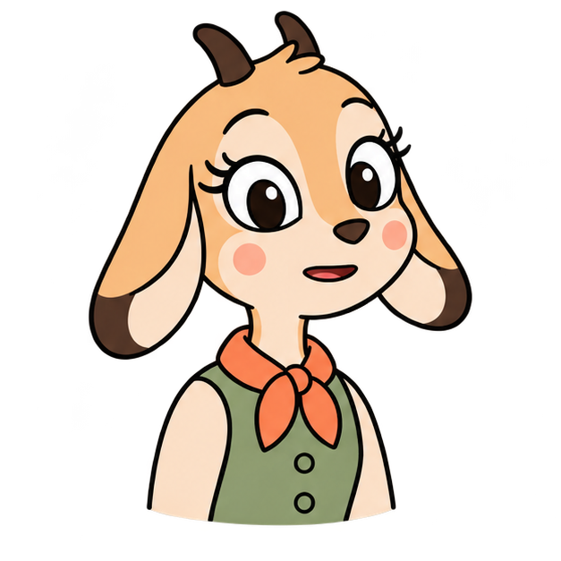
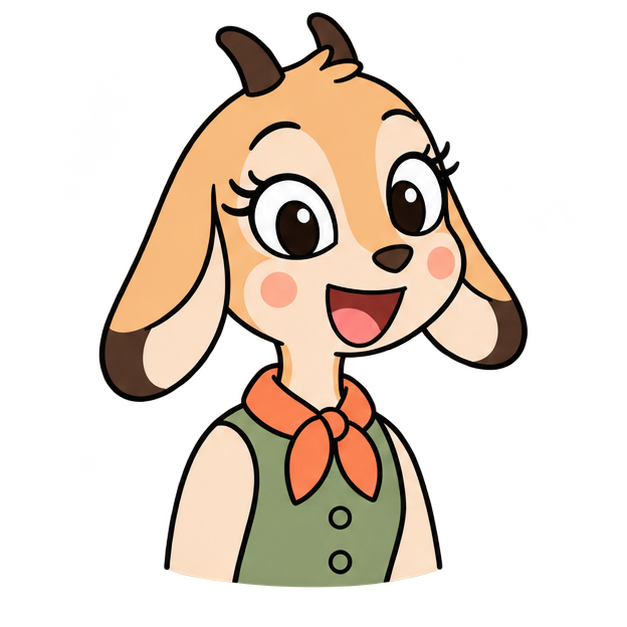
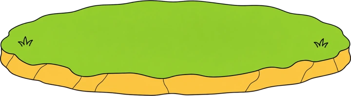

Ceren Öğretmen ile İngilizceye Merhaba
3–6 yaş için ilk İngilizce uygulaması · plan · 17 Kasım 2026 (akşam güncellendi: derste 4 kelime, üç seviye)

Tek cümleyle: Ceren Öğretmen dersi Türkçe anlatır, sınıfın papağanı Polly yalnız İngilizce konuşur, çocuk dinler, söyler ve oynar. Her gün 5 dakikalık bir ders, sonra istediği kadar oyun.
1. Uygulamanın haritası
Açılınca tek ekran. Solda Ceren Öğretmen karşılar; küçük çocuk tek düğmeyle derse girer. Sağda bölümler durur.


DERSLERCeren Öğretmen'in sınıfı · adım adım öğretir OYUNLARöğrendiğini oynayarak pekiştirir
OYUNLARöğrendiğini oynayarak pekiştirir KELİMELERİMçıkartma albümü, resimli sözlük
KELİMELERİMçıkartma albümü, resimli sözlük- Dersler: eğitici bölüm. Üniteler deniz üstünde adalar olarak durur; çocuk öğrendikçe adaya o ünitenin karakterleri gelir, ada canlanır.
- Oyunlar: pratik bölümü. Derste öğrendiği kelimelerle oynanan altı oyun ve her gün değişen kısa bir "Günün Tekrarı".
- Kelimelerim: her öğrenilen kelime bir çıkartma olur. Dokununca kelimeyi yeniden söyler. Senin kitabının uygulamadaki karşılığı.
- Büyükler için: ebeveyn kapısının arkasında. Çocuk hangi kelimeleri öğrendi, evde nasıl tekrar edilir.
2. Bir ders nasıl geçer
Her kelime dersi 4 yeni kelime, 5 kısa adım, toplam 5 dakika kadar. Açılış ve kapanış hep aynı; aradaki oyunlar her derste değişir (1. ders Bul + Kino'ya Öğret, 2. ders Balon + Ne Eksik, 3. ders şenlik). Bir kelime derste art arda yinelenmez: tanışmada iki kez duyulur, çocuk söyler, sonra oyunlarda geri gelir.

Hello!
Polly "Hello!" der, çocuk karşılık verir. Sonra önceki derslerden iki hızlı soru: unutulmasın diye.
30 saniye

Tanış
Önce ses gelir ("meee"), çocuk merak eder, dokunur, resim çıkar. Polly "Sheep!" der, bir de yavaş söyler. Ceren Türkçesini söyler. Çocuk da söyler; Polly överken cümle içinde kullanır ("Great job! It's a sheep.").
4 kelime · 1,5 dakika

Bul
"Where is the cow?" Çocuk resimlerden bulur. Yanlışa dokunursa o resmin adını duyar; ceza yok. Kelimeler karışık sırayla geri sorulur. 2. derste bu adımın yerini Balon Patlat alır.
4–6 soru · 1 dakika

Oyun
Her derste başka oyun: Kino'ya öğret, balon patlat, ne eksik, Obur'u besle. Aynı kelimeler, yeni eğlence.
1,5 dakika

Söyle ve kazan
Çocuk her kelimeyi kendi sesiyle söyler, çıkartması albüme uçar. Yıldızlar, "Goodbye!"
1 dakika
Her ünitenin üçüncü dersi bir şenliktir: ünitenin kelimeleri tek bir canlı sahnede (çiftlik, oda, dükkân) buluşur, çocuk her şeye dokunur, sonra ada canlanır.
3. Oyunlar bölümü
Günün Tekrarı
Her gün 8 soru. Uygulama hangi kelimenin unutulmak üzere olduğunu takip eder, onu sorar.
Kino'ya Öğret
Kino yanlış resmi kaldırır: "Is it a duck?" Çocuk evet ya da hayır der, doğrusunu Kino'ya verir. Öğreten çocuk daha iyi öğrenir.
Balon Patlat
Resimli balonlar yükselir, Polly bir kelime söyler, çocuk doğru balonu patlatır.
Ne Eksik?
Üç resim görünür, perde kapanır, biri kaybolur. "What's missing?"
Obur'u Besle
Harf Atölyesi'ndeki Obur burada da aç: "Apple, please!" Yanlışı geri verir.
Konuşan Resim
Dolu bir sahne. Dokunulan her şey canlanır ve adını söyler. Sonra Polly sorar, çocuk gösterir.
İleriki ünitelerde iki büyük oyun daha açılır: Kelime Makinesi (sayı + renk + nesne: "Three red apples!") ve Merhaba Dükkânı (ilk konuşmalar: "Two apples, please." "Thank you!").
4. Ne öğretiyoruz
12 ada. Her adada üç seviye, her seviyede üç ders: toplam 108 ders. Çocuk bir adanın kelimelerini öğrenir, iki ada sonra cümleler için, beş ada sonra konuşma için o adaya geri döner (sarmal yol: kelime, cümle ve hikâye dersleri art arda değil sırayla gelir, eski kelimeler unutulmadan yeniden kullanılır).
1. seviye · Kelimeler
Her adada 8 kelime (ders başına 4): toplam 96 kelime. Dinle, gör, bul, söyle. Üçüncü ders şenliktir: kelimeler tek sahnede yaşar.
2. seviye · Cümleler
Her adada iki yeni kalıp, sekiz cümle: büyük–küçük, ve, renk + nesne, sayı + çoğul, severim–sevmem, bende var, üstünde–altında–içinde, şimdi ne yapıyor, yapabilir. Üç dersin oyunları ayrı: 4. derste resmini seçer (Hangisi?) ve taşlarla kurar; 5. derste cümle resme uyuyor mu diye karar verir (Doğru mu?); 6. derste cümle hafızası, Polly'nin Dürbünü (resimler mercekten geçer, söyleneni yakalar) ya da Say ve Koy (söylenen kadarını tepsiye koyar) ve Sen Söyle.
3. seviye · Konuşma
Soru–cevap (What is it? How many? Where is the cat? Do you like apples?): önce Polly sorar, sonra roller değişir ve çocuk sorar, Polly cevaplar (Sen Sor). Dört taşlı uzun cümle kurma. Dört resimlik kısa bir hikâye: dinle, sıraya diz, sonra hikâyeyi kendi sesinle anlat.
Günlük sözler
Üst seviye derslerinde selamdan sonra kısa bir konuşma: "How are you?" – "I'm fine, thank you!", "What's your name?", "How old are you?". Üç söz dersten derse döner; Ceren ilk derslerde Türkçe açıklar, sonra Polly sorar ve çocuk kendisi cevaplar.
| Ada | 1 · Kelimeler (8) | 2 · Cümleler | 3 · Soru ve hikâye | |
|---|---|---|---|---|
| 1 | Çiftlik | sheep, cow, duck, cat, dog, horse, chicken, pig | A big cow. · A cat and a dog. | What is it? · Kino at the Farm |
| 2 | Renkler | red, blue, yellow, green, orange, pink, purple, black | A red ball. · A yellow kite. | What color is it? · Two Balloons |
| 3 | Sayılar | one … eight | One apple, two apples. · Five ducks. | How many? · One, Two, Three! |
| 4 | Yiyecekler | apple, banana, pear, milk, bread, cheese, egg, water | I like / I don't like milk. · I like apples and pears. | Do you like apples? · Kino is Hungry |
| 5 | Oyuncaklar | ball, teddy bear, doll, kite, robot, drum, balloon, puzzle | I have a ball. · I have two balls. | What do you have? · The Toy Box |
| 6 | Ailem | mom, dad, sister, grandma, grandpa, friend, family, teacher | She is my mom. He is my dad. · I love my mom. | Who is it? · My Family |
| 7 | Yüzüm | eyes, ears, nose, mouth, hands, feet, head, legs | I have two eyes. · Close your eyes. | What is it? · Good Morning, Kino |
| 8 | Kıyafetler | hat, shoes, socks, T-shirt, pants, jacket, dress, scarf | A red hat. · Big shoes. | What color is it? · It's Cold! |
| 9 | Odam | bed, chair, table, lamp, door, window, box, clock | The cat is on / under the bed. · The ball is in the box. | Where is the cat? · Where is the Cat? |
| 10 | Taşıtlar | car, bus, train, plane, boat, bike, truck, rocket | I see two cars. · I go by bus. | What do you see? · Kino's Trip |
| 11 | Hareketler | jump, run, clap, sleep, eat, drink, dance, swim | Kino is jumping. · The cat is sleeping. | What is Kino doing? · Kino's Day |
| 12 | Vahşi hayvanlar | lion, monkey, elephant, bird, fish, frog, giraffe, snake | The elephant is big. · The fish can swim. | Is the elephant big? · In the Jungle |
Bir ders ancak bütün çizimleri ve sesleri tamamsa açılır; yarım ders çocuğa hiç görünmez. Her üniteye sonradan eklenen iki kelime de çizimi gelince derse girer. Selamlaşma ve sınıf sözleri (Hello, Goodbye, Yes, No, Thank you, Listen, Your turn, Great job) her derste yinelenerek öğrenilir.
5. Neden böyle
Araştırmadan çıkanlar
- Okul öncesinde kelimeyi kalıcı yapan şey, araya başka kelimeler girdikten sonra hatırlatıp sordurmaktır; yalnız tekrar dinletmek daha zayıf kalır. Bu yüzden her derste "Bul" adımı ve her gün "Günün Tekrarı" var.
- Çocuk kelimeyi önce tanır, söylemesi daha geç gelir ve daha çok tekrar ister. Bu yüzden sıra: dinle, gör, bul, en son söyle.
- Bir uygulamayı eğitici yapan dört şey: çocuğun aklının çalışması, dikkatinin dağılmaması, öğrendiğinin anlamlı olması ve biriyle etkileşim. Ceren, Polly ve Kino bu yüzden hep sahnede.
- Düz kart göstermek yerine kelimeyi sahnenin içinde yaşatan uygulamalar beyinde daha güçlü iz bırakıyor. Bu yüzden her ünite canlı bir sahneyle biter.
- Okul öncesi çocuk için en kolay hareket dokunmaktır; okuyamaz, yönergeyi sesle ister; her dokunuşa anında ses ve hareketle cevap bekler.
Rakiplerde eksik, bizde var
- Türkçe anlatan öğretmen. Yabancı uygulamalarda oyunun ne istediğini çocuk anlamıyor; öğretmenler ve veliler en çok bundan şikâyet ediyor. Bizde Ceren her oyunu bir cümleyle anlatır.
- Gerçek ders sırası. Rakiplerde kelimeler bir kez duyuluyor, sonraki ünitelerde geri gelmiyor. Bizde her kelime en az 8 kez, günlere yayılarak döner.
- Çocuğu konuşturur. Her kelimeyi çocuk kendi sesiyle söyler; ses kaydedilmez, hiçbir yere gönderilmez.
- Tanıdık karakterler. Ceren Öğretmen, Kino, Mino ve Obur; Harf Atölyesi ve Matematik ile aynı dünya.
- Veli köşesi. Öğrenilen kelimeler ve evde yapılacak küçük tekrar önerileri.
6. Sesler
- Ceren Öğretmen (Türkçe): Harf Atölyesi ve Matematik'teki kendi sesi.
- Polly (İngilizce): 17 Kasım'da seçtiğin "Ruby Roo" sesi. Her kelime, her yavaş söyleyiş ve her cümle ayrı istekle üretilir; her kaydın süresi ve söylenen sözü tek tek denetlenir (bozuk çıkan kayıt yeniden üretilir).
- Kino (Türkçe): onayladığın "Kino 5 yaş" sesi.
- Ben sesi duyamıyorum. Bu yüzden her ünitenin sesleri sana kısa bir dinleme sayfasıyla gelecek; sen onaylamadan o ünite yayına girmeyecek.
7. Yapım sırası
- Şimdi: sistemin tamamı (dersler, oyunlar, albüm, tekrar takibi, veli köşesi) ve 1. ünitenin baştan sona bitmiş hâli.
- Sonra: sen 1. üniteyi oynayıp sesleri dinlersin. Beğendiğin kalıp diğer 11 üniteye uygulanır; her ünite çizimi ve sesi tamamlanınca açılır, yarım ünite hiç görünmez.
- Çizimler: Astra'ya sayfa sayfa iş veriyorum (sayfa başına en çok 6 çizim). Gelen her çizim yerine kendiliğinden oturur.
Kaynaklar: Eğitici uygulamaların dört direği (Hirsh-Pasek ve ark.) · Okul öncesinde aralıklı geri çağırma (Leonard ve ark.) · Okul öncesinde teknolojiyle kelime öğrenimi, meta-analiz (2025) · Sahne içinde öğrenme ile kart gösterme karşılaştırması · Sesame Workshop: okul öncesi için dokunmatik tasarım · Bir İngilizce öğretmeninin Studycat incelemesi · Bir velinin Studycat incelemesi · Cambridge Pre A1 Starters kelime listesi